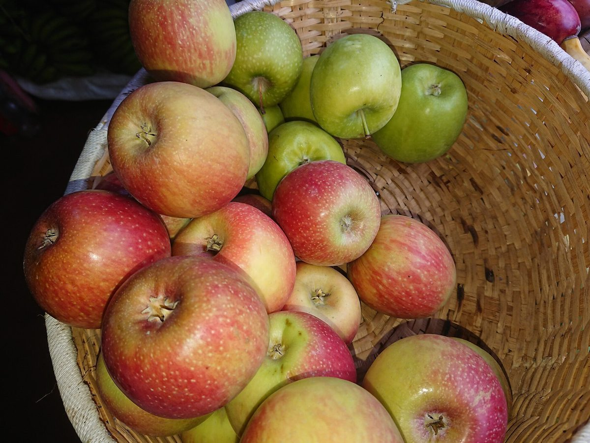

制作側の連想
カフスボタンの部位を、配置図にしてみる
カフスボタンの部位を図にしたもので、制作側の連想です。お店の理念・由来とは無関係で、実際の製品の仕様を示すものでもありません。 六つの部位に番号をふり、上の図と並べています。
凡例
六つの部位
- 1飾り面正面に見える模様や石をのせる部分で、袖口で外を向く側。
- 2縁(ベゼル)飾り面をぐるりと囲む輪の部分で、面を守りながら形を引き締める。
- 3台座飾り面と縁を裏から受ける土台の部分で、鎖をつなぐ金具がつく。
- 4つなぎ鎖台座と留め棒をつなぐ小さな輪の連なりで、動きに合わせて曲がる。
- 5留め棒鎖の先につく細い棒で、袖口の穴に通したあと横向きに回して留める。
- 6止め玉留め棒の両端につく小さな丸い部分で、棒の先を保護して見た目も整える。
写真(イメージ)
写真(イメージ)





写真はイメージです。お店のものではありません。
ご案内
お店のこと(確認できたものだけ)
| 所在地 | 〒939-0351 富山県射水市戸破 字後宝1463 |
|---|---|
| 電話 | 準備中 |
| 営業時間 | 準備中 |
| 定休日 | 準備中 |
| ご予約 | 準備中 |
| 駐車場 | 準備中 |
| SNS | Instagram @cafe_gallery_luchana |